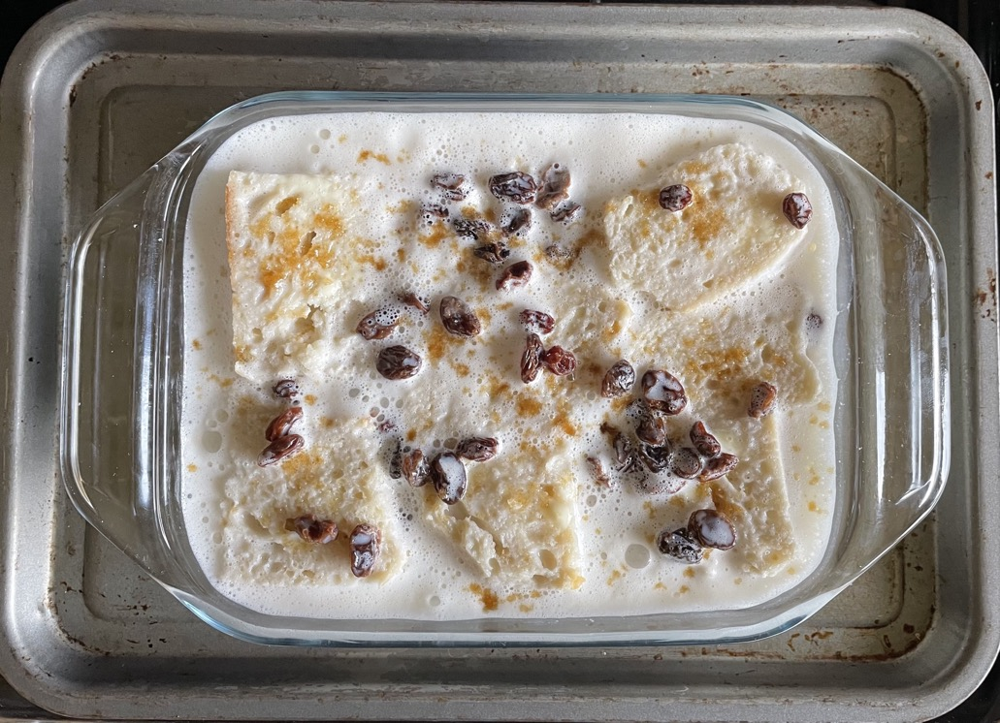

Coconut bread & butter pudding
Raisins
- Soak in hot water for 10 min
- Drain
Eggs
- Beat for 3-5 mins
- 2 large eggs
- 1½ tbsp caster sugar
Custard
- Heat to 70°C
- 250ml (258g) milk
- 160g coconut cream
- 1 tsp vanilla extract
- Pour slowly over eggs stirring constantly so they do not curdle
Bread & butter
- Remove crusts and cut into slices then triangles
- ½ (200g without slices) loaf bread
- Butter one side of each slice
- Make one layer of bread with butter side up
- Sprinkle half raisins
- Add second layer of bread with butter side up
- Sprinkle remaining raisins
- Pour custard over the bread, push bread down to absorb liquid
- Sprinkle over
- Cook in oven at 180°C for 40-45 mins
- Leave to cool and set for 1 hour
Notes
Pics
